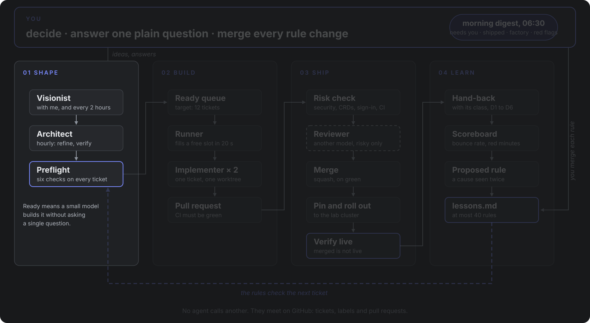
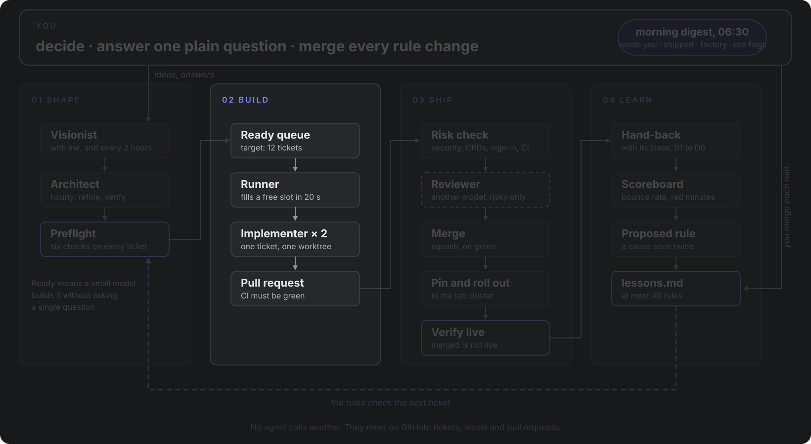
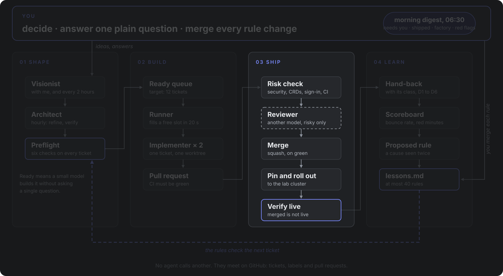
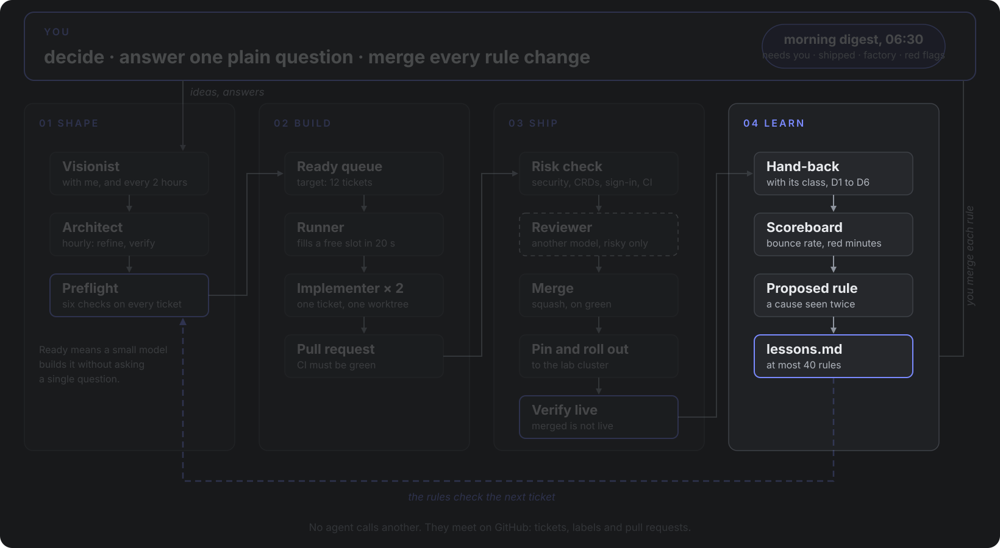
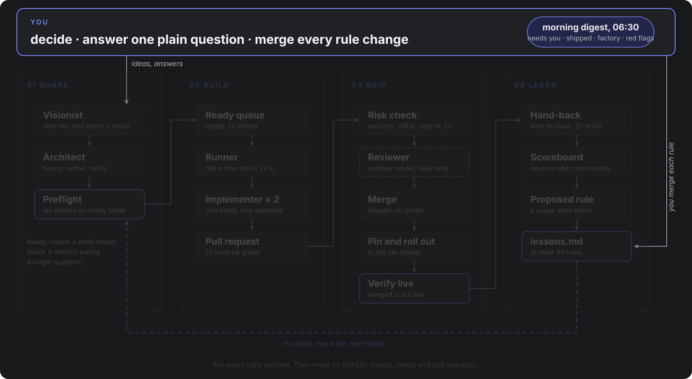
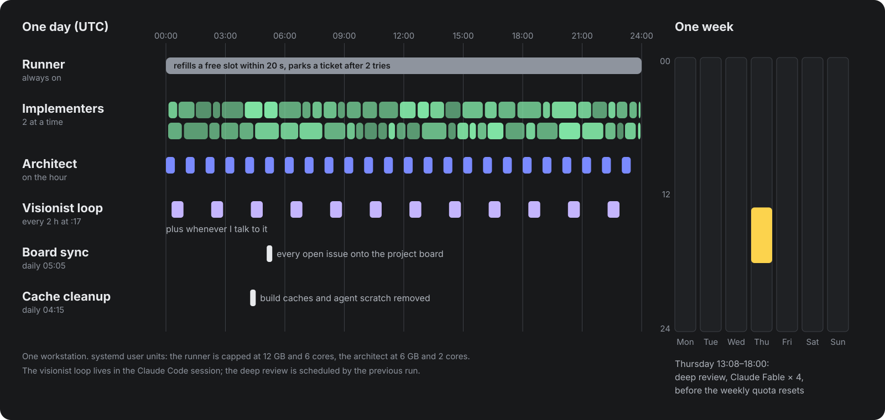

Martin’s experiences · November 2026
The dark factory.
How agents build stardelt around the clock, and how one person stays in charge.
pull requests merged in 14 days, in public repositories.
The whole factory on one slide.
![The dark factory. Across the top: you decide, answer one plain question and merge every rule change, and read the morning digest. Below, four stages from left to right. Shape: the visionist, the hourly architect and a preflight check on every ticket. Build: the ready queue, the runner, two implementer sessions and a pull request with green CI. Ship: a risk check, a reviewer on another model for risky changes, merge, pin and roll out to the lab, and a live check. Learn: hand-backs with their class, the scoreboard, proposed rules and lessons.md with at most 40 rules, which loops back to check the next ticket.](img/factory-map.svg)
01
Shape
An idea becomes a ticket a small model can build.

Five roles, one person who decides.
| Role | Runs as | When | Never |
|---|---|---|---|
| Visionist | Claude Code, Opus | with me, and every 2 hours | writes code |
| Architect | opencode, DeepSeek V4.1 Flash | every hour, on a timer | implements |
| Implementer | the same model, low effort | one session per ticket, 2 at once | changes a decision |
| Reviewer | a model from another family | risky pull requests only | merges |
| Deep review | Claude Fable | once a week, five hours | ships anything |
They meet on GitHub, never directly.
ready-to-implement
A small model can build it. Files, symbols, checks, no open question.
claiming
One ticket, one session. Nothing is built twice.
blocked
A step was wrong. The session says why and stops instead of improvising.
needs-maintainer
It waits for me, with one plain question.
A ticket is ready when a small model can build it without asking a question.
02
Build
The runner never sleeps, and never starts a bad ticket.

One ticket, one session, one pull request.
20 s
A free slot is filled within twenty seconds, day and night.
2 tries
Then the ticket is parked for a person. No third guess.
30 min
About that long from ready to closed, over the last 14 days.
A preflight before the first token.
Checked before dispatch
- The ticket has steps, checks, files, and no open question
- Every path it names exists
- No command reads two inputs at once
- Every command parses
- No check row another ticket also claims
- No platform change without its operator twin
Why
12 of 21 hand-backs were defects in the ticket, not in the code.
Each one cost a full session before it showed. A failed preflight parks the ticket without spending one.
03
Ship
Green CI is where checking starts, not where it ends.

Risk decides who reads a pull request.
Most pull requests
Merge on green CI.
Docs, UI copy, tests, a new check: the session merges its own work once CI passes.
Risky ones get a second model first
Security, resource definitions, sign-in, the Spark front door, CI workflows, anything breaking.
A blocking finding is fixed and reviewed once more. A second one sends the ticket back.
A gate on everything gets rubber-stamped. A gate on what can hurt gets read.
Ship
Merged is not live.
Seven times
main went red on one image pin.
Fix: the pin and its golden test move in one change.
13 Secrets
still held a credential after the fix merged.
Fix: a ticket closes on the lab’s answer, not on CI.
This morning
the runner ran scripts from four hours earlier.
Fix, ticketed: its checkout follows main on every pass.
04
Learn
Every hand-back teaches the next ticket.

Six ways a ticket goes wrong.
| Class | What happened |
|---|---|
| D1 | A name that does not exist: a file, a function, a make target |
| D2 | A permission nobody tested |
| D3 | A stale line number, or two tickets on the same check |
| D4 | A command that cannot run as written |
| D5 | A missing twin, or a test file missing from the list |
| D6 | Image pins and licences |
Every hand-back now carries its class.
A playbook of at most 40 rules.
Count
Every hand-back adds a hit to the rule it broke.
Propose
A cause seen twice becomes a proposed rule, as a pull request.
Merge
Only I merge a rule. When the book is full, the rule with the fewest hits goes.
The architect’s instructions were 10,960 lines this morning, mostly its own diary. Now they are 161.
The scoreboard, last 14 days.
sessions
tickets closed
handed back
times the queue ran dry
05
You stay in the loop
Dark means unattended, not unwatched.

One plain question.
What reaches me
Can people who may only view a Spark cluster also run code on it?
A: no, viewing only (recommended). B: yes. Reversible: yes.
The rule
- One question, ending in a question mark
- The options and a recommendation
- No jargon without half a sentence that explains it
- Reversible: yes or no
Silence has a default.
72 h
A reversible question with no answer gets its recommendation applied, and the ticket says so.
Never
Security, money, licences, deleting data and anything public wait for a real answer.
The morning digest.
One pinned issue, rewritten at 06:30
- Needs you: every open question, oldest first
- Shipped: what closed yesterday
- Factory: the scoreboard, one line
- Red flags: main red, an empty queue, an old question
And the rules
The factory proposes its rules. I merge them.
A change to a prompt or to the playbook arrives as a pull request with my label. No agent merges it.
One workstation, five units.
| Unit | Does | Bounds |
|---|---|---|
| runner | Always on. Fills a free slot within 20 seconds. | 2 sessions, 12 GB, 6 cores |
| architect | On the hour, every hour. | 1 session, 6 GB, 2 cores |
| digest | 06:30 every morning. | — |
| project-sync | Daily: every open issue on the board. | — |
| gc | Daily: build caches and agent scratch. | — |
I watch from anywhere: a terminal workspace, a private network, and a phone notification when an agent waits for me.
The day and the week.

Busy around the clock on one workstation. The most expensive model works once a week.
What broke
Every rule was paid for.
Two agents
built the same thing twice.
Fix: lanes, and a “claiming” comment before any work.
Three sessions
restarted Kubernetes.
Fix: memory and CPU caps on the units.
A model
was geo-blocked overnight.
Fix: pin the model in the unit.
A parked ticket
was picked up again every minute.
Fix: the queue skips anything waiting for me.
Next: checks the agents never see.
Holdout scenarios
- Five journeys through the public demo
- Run every night in a real browser, on another model
- Scored 0, ½ or 1, with a screenshot
- Kept outside the code the agents edit
Why
“The ticket is closed” and “a person can do it” are different facts.
One night every ticket was closed and every check was green, and the demo notebook hung on its first cell.
Build it with us
Good ways to start
Try the quickstart
A fresh pair of eyes finds things the maintainers cannot.
Fix a page
Every page has an Edit this page link.
Pick up an issue
Issues labelled ready-to-implement list the exact files, steps and checks.
AI assistants are welcome.
Name the model in the description, so a reviewer knows what to check more closely — and you are the author.
An issue anyone can build
Name the file and symbol
Name the file, symbol and line, never "the controller".
Give the exact command and its output
"It works" cannot be checked.
One issue, one pull request
Up to about 150 lines, because small changes get merged.
everything in the open
github.com/stardelt
The product, the tickets and every pull request the agents opened.